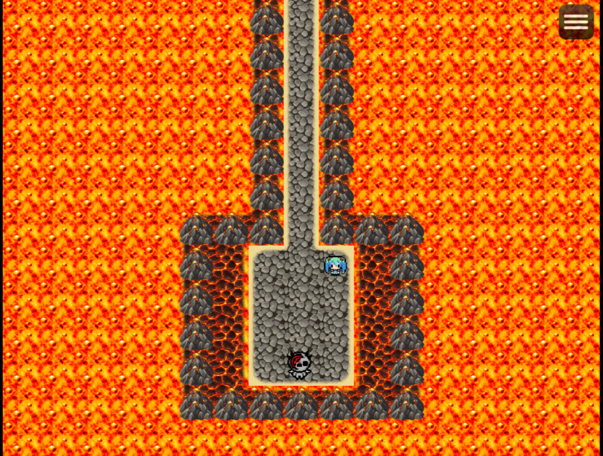
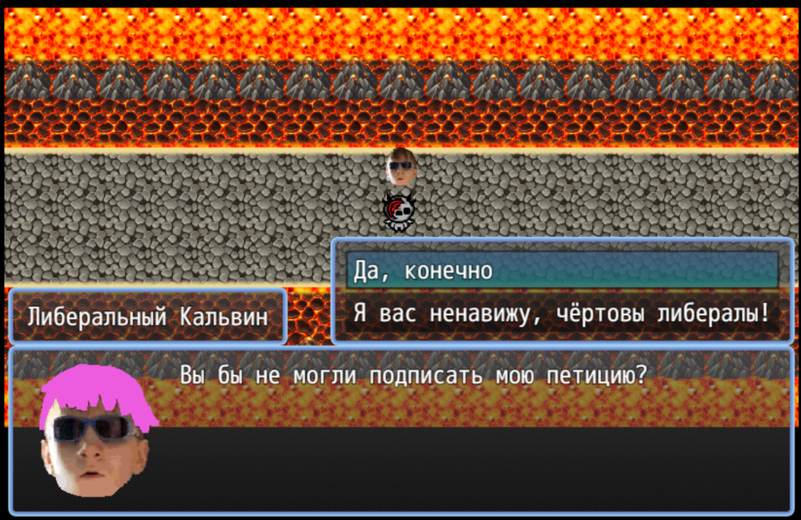
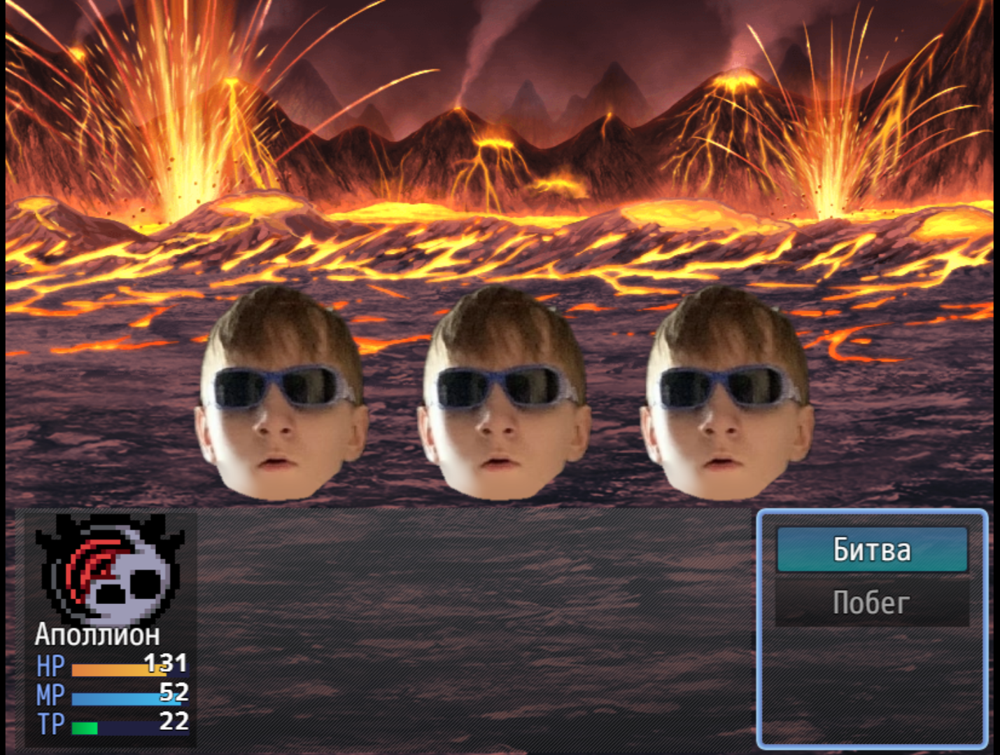

Apollyon in Hell
Скачать версию для Windows
Download Windows version
188 MB
Apollyon ib Hell (на самом деле озаглавлена как Huihuihui) -- игра, которую я создал чтобы протестировать возможности движка RPG Maker. В ней вы играете за Аполлиона и вам надо пройти лавовое подземелье с Кальвинами.
Apollyon ib Hell (actually titled Huihuihui) is a game I made to test the capabilities of the RPG Maker engine. In it, you play as Apollyon and have to go through a lava dungeon with Calvins.


